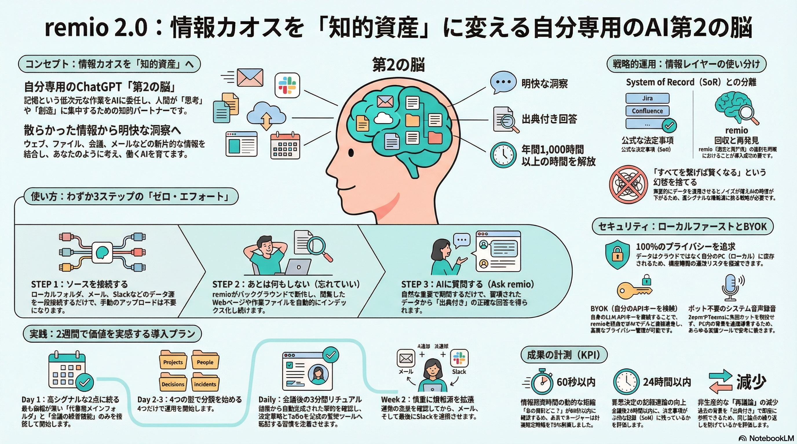

remio 2.0とは
remio 2.0は、「自分専用のChatGPT（第二の脳）」を作るためのローカルファースト型AIナレッジ基盤です。自分の情報を集約して、後からAIで検索・要約・参照できることがポイント。2026年1月14日にProduct Huntでローンチされました。
1,000+
年間検索・整理時間の削減（時間）
60秒
情報探索のターゲット時間
75%
週次計画時間の削減（事例）
$12.4
BYOK推奨プラン/月
知識労働者が直面する「3つの敵」
1. 断片化（Fragmentation）
情報がSlack、メール、会議、ローカルファイルに散らばり、文脈が切断されている。「あの資料どこ？」の探索に時間を奪われる。
2. 揮発性（Volatility）
会議での重要な決定や背景情報が、議事録として定着せず消えていく。「言った言わない」の手戻りが発生する。
3. 手動整理の限界（Manual Overhead）
整理自体に時間を使いすぎ、本質的な「思考」や「創造」の時間が奪われている。
Insight
年間1,000時間以上が、情報の「検索」と「整理」に浪費されている。
remio 2.0の主要機能
Auto Capture（自動収集）
バックグラウンドでWeb履歴やファイルを自動収集
- ブラウザ拡張: WebページやGoogle Docs、YouTubeなどを自動で取り込み
- ローカルフォルダ連携: ファイルをアップロード不要でインデックス化
- 仕事チャネル連携: メール（inbox）やSlackも連携して検索可能な知識資産に
Meeting Intelligence（会議インテリジェンス）
ボット招待不要。PCシステム音声を直接録音・文字起こし・要約
- 自動文字起こし: 会議や講義の録音を自動でテキスト化
- 要約生成: 長い会議でも要点を自動抽出
- 検索・チャット: 後から会議内容を質問形式で検索可能
Ask remio（RAG検索）
自分のデータをソースに、出典（引用）付きで回答生成
- ナレッジベース横断検索: 散らばった情報を横断して質問可能
- 出典付き回答: ハルシネーションを抑制し、根拠を明示
- ライブWeb検索内蔵: 世界の情報も同時に取りに行く
セキュリティとプライバシー: Local First & BYOK
Local First
データはPC内に保存・インデックス化。クラウド漏洩リスクを低減。
BYOK（Bring Your Own Key）
自分のAPIキー（OpenAI, Gemini, Anthropic等）を利用可能。データコントロール権はユーザーにあり、ベンダーロックインを回避。
Hybrid Architecture
完全オフラインではなく、必要な推論のみクラウドLLMを使用（プライバシーと性能のバランス）。
運用上の注意: 「何をどこまで送るか」が肝。特に業務利用では、連携範囲・ブラックリスト・送信条件を最初に詰めるべき。
競合比較: なぜremioなのか？
| Notion AI | Otter | Obsidian | remio 2.0 | |
|---|---|---|---|---|
| Input Style | Manual / Paste | Recording only | Manual / Markdown | Automatic (All Apps) |
| Storage | Cloud | Cloud | Local | Local + Hybrid |
| Experience | Team Wiki | Transcription | Custom Note-taking | Integrated Second Brain |
入力の摩擦ゼロ
勝手に集まる・横断できる。手動保存が不要。
ローカルファースト
機密情報をクラウドに上げずにAI解析。
統合体験
会議録音から検索まで1つのアプリで完結。
実践プラン: 3ステップ導入
Step 1: 接続は「高シグナル」に絞る
✅ 推奨アクション（Start Here）
- ローカルの「仕事用メインフォルダ」1つ
- 「会議録音」
これだけで即座に価値が出る。
❌ 警告（Do Not）
- 最初からSlackを全同期しない
Slackの雑談は検索精度を下げる。S/N比の維持が重要。
Step 2: 4つの「型」で整理する
1. Projects
案件・プロダクトの文脈。
2. People
ステークホルダー・顧客・チームメンバーとの履歴。
3. Decisions
重要な意思決定ログ（ADRなど）。
4. Incidents
障害対応、トラブルシューティング、学び。
Note: 複雑なタグ付けは不要。AIによる自動分類とこの4つのバケツだけで運用を開始する。
Step 3: 会議後の「3分間リチュアル（儀式）」
👁
Review
remioの自動要約を開く
➡
🔍
Extract
決定事項・保留・次アクションを抽出
➡
💾
Transfer
SoR（Jira/Confluence）に転記、remioのリンク（出典）を貼る
Outcome: 揮発性の高い議論と、公式な意思決定の間に「監査可能な証跡（audit trail）」を構築する。
成果をどう計測するか（ROI）
60秒
情報探索時間 Target
「あの資料どこ？」が60秒以内に解決するか。
24h
記録速度 Target
会議後24時間以内にSoRへ決定事項が残っているか。
↓
手戻り削減 Target
「言った言わない」の再議論が減ったか（出典付き回答の効果）。
Success Case
競合分析の自動化により、週次計画時間を75%削減（FinTechマネージャーの事例）。
プランの選び方
Free
$0
まずは自動収集と検索を試したい人
- 📁 Capture: 無制限
- 🤖 AIクレジット: 少
BYOK
$12.4/mo
プライバシー重視、自社でAPI契約がある人
- 🔑 自分のキーでコストとデータを管理
- ✅ データコントロール権
Pro
$16.5/mo
AIヘビーユーザー
- 📊 2,000 credits/月
- 🚀 モデル利用料を気にせず使い倒したい人
Note: 年払いによる割引（REMIO2026）も検討。
導入の「罠」を回避する: 注意点
Slack連携の制約
macOS版のみの機能制限や、プラットフォーム側のAPIポリシー変更リスクを理解する。「決定事項はSlackに置かない」運用が必須。
OS要件
Windows 10+ (x64)またはM-Chip Macのみサポート（Intel Mac/モバイル未対応）。
完全オフラインではない
高度なAI処理（Ask remio）にはインターネット接続が必要。
必須設定
精度向上のため、Chrome拡張とローカルファイル同期は必須と考えるべき。
ユーザーの声: 実証された効果
Educator
「準備時間が6時間短縮。YouTubeやPDFから教材を統合できる。」
Manager
「週次計画時間が75%削減。戦略と実行に集中できるようになった。」
Developer
「ローカルファーストの安心感。セキュリティを妥協せずにすべてをキャプチャできる。」
Consultant
「手動保存が不要になった。バックグラウンド収集が時間を節約してくれる。」
結論: あなたの「知的パートナー」を目覚めさせよう
remio 2.0は単なるツールではない。あなたの経験を学習し、思考を加速させるエンジンである。
今すぐ「検索」をやめて「思考」を始めよう。
Final Tip
最初の2週間で、会議の意思決定をすべて追跡可能にする運用から始めよう。
スライド資料 (全15ページ)